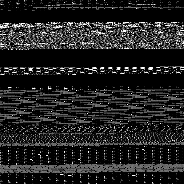
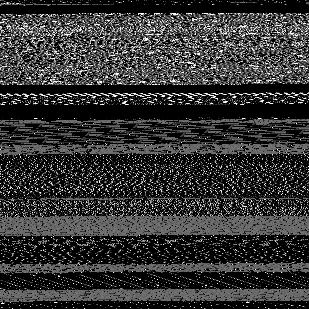
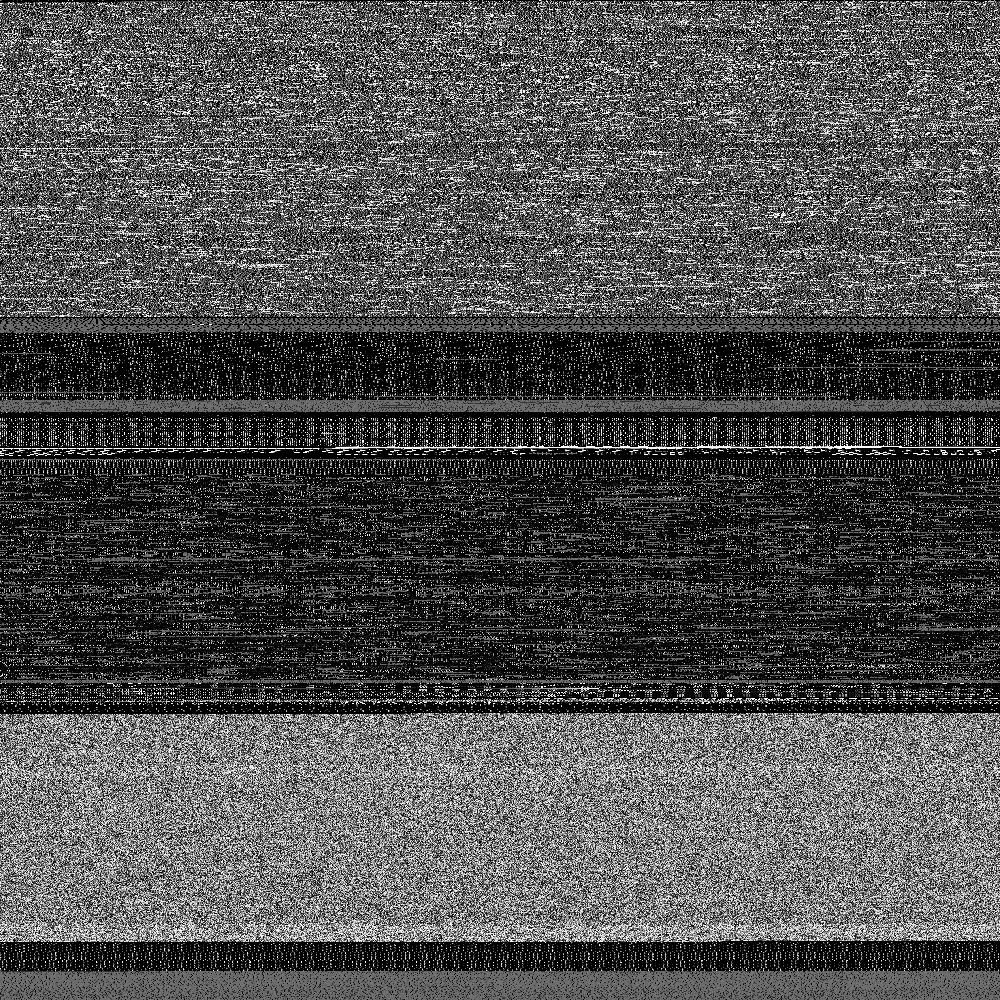

I run programs all day every day. Programs are a computer user’s bread and butter.
I rarely stop to really take a look at them though. What does a program actually look like?
x86 bytecode has a pretty consistent look, if you stick it under the microscope with a tool like xxd.
What if you wanted to see a lot of the data all at once? There’s actually a really convienient format for ingesting
bulk data quickly.. Images! Our brain/eyes handle wide, parallel ingest pretty well, and we do a pretty great job at
visual pattern recognition. Similarly, you can also apply sensor motion data to a rectangular prism model to quickly
sniff-test motion vectors, but we’ll get into that one another day.
There’s a super simple image format out there, NetBPM, that makes converting any random data into a visualization, trivial.
There’s 6 variants, each of which can be handy.
| Magic Number | Meaning |
|---|---|
| P1 | ascii black and white |
| P2 | ascii greyscale |
| P3 | ascii color |
| P4 | binary black and white |
| P5 | binary greyscale |
| P6 | binary color |
The format, roughly
<PNM Magic>
<width> <height>
<color depth>
...binary/text data...
So, an simple black and white ascii PNM image
P1
4 4
1 0 1 0
0 1 0 1
1 0 1 0
0 1 0 1
Once you fill out the ascii NetBPM header, you can plop the rest of the binary immediately after it, fire up your new file in your favorite image viewer that supports the pnm format, and then enjoy!
Some interesting dumps I took of little things I’ve worked on in C, Odin, and Go
  
I love staring at this stuff, it makes some fascinating patterns. If you shuffle around how you compute dimensions for the data, you can encourage new patterns to pop out, as various parts of the binary line up. What’s the stride length of your ELF section headers? Try making a render with a width that’s a multiple of a section header in bytes, see if it pops out!
Another interesting observation, taking a look at the big image, you’ll notice one section looks particularly like noise. It’s actually compressed! Go compresses debug information by default. Sections with code look streaky, and string tables are fairly similarly toned, with black null terminator holes at the ends.